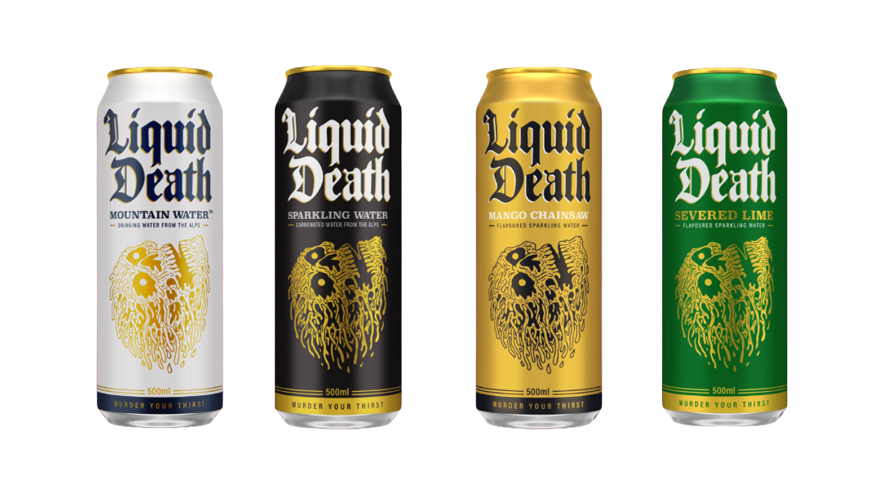
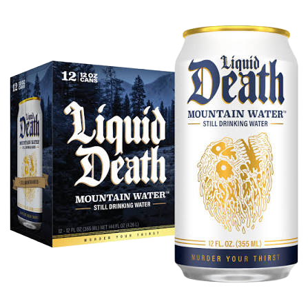
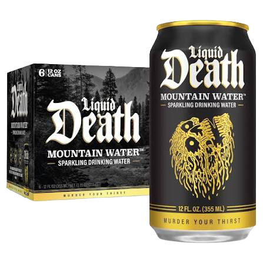
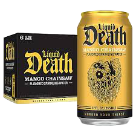
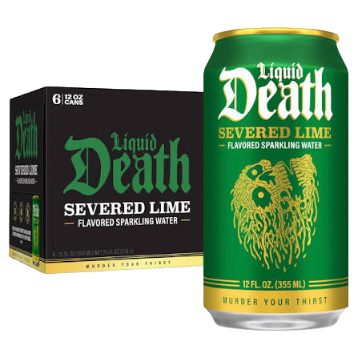

*MOUNTAIN WATER
still
VIEW ADD TO CART


Many bottled water brands are just processed municipal tap water in plastic bottles. But these ice cold recyclable cans of Mountain Water come from real American mountain ranges that produce some of the best water in the world.

Many bottled water brands are just processed municipal tap water in plastic bottles. But these ice cold recyclable cans of Mountain Water come from real American mountain ranges that produce some of the best water in the world.

Some joke that most sparkling waters taste like someone whispered the name of a flavor in another room. But these killer cans of soda-style sparkling will attack your tastebuds with soda-level flavor and only 1/10th of the sugar.*

Some joke that most sparkling waters taste like someone whispered the name of a flavor in another room. But these killer cans of soda-style sparkling will attack your tastebuds with soda-level flavor and only 1/10th of the sugar.*